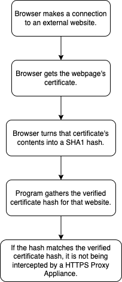

Fingerprints
Fingerprints are used by the HTTPS protocol to ensure the security of a website. The HTTPS protocol is designed to encrypt all data being transmitted between the browser and server, and to protect the website from being able to be hijacked. Because of how restrictive the HTTPS protocol is for ISPs, a HTTPS Proxy Appliance is sometimes used. This Appliance circumvents the guarantee of internet privacy and security. It adds a Pseudo Certificate Authority to the users' browsers / computers. Anytime a user connects to a website with that certificate, the connection is intercepted by the Proxy Appliance and tracked before it leaves the building. This is used by ISPs, governments, and schools to track their users' data. This is essentially a MITM, or man in the middle attack. This is when an external force scans your network traffic before it is sent to a server. The attacker can also redirect your request to a different server. This presents multiple risks because when you visit google.com, you might not actually be going to google.com, or the data you send to the search engine might be looked at by others.
This type of interception can feel like an invasion of privacy. I see both sides to this argument. As an internet user, I feel I should have the right to my privacy, however, I also see the need for intercepting communications between criminals. Schools are often required to monitor and block certain traffic with government laws, but it is also sometimes used to spy on the students unnecessarily. I feel like it is often abused more than it is used for legitimate means, but I doubt it will ever change. The most we can do is make it harder for them to track our movements with things like VPNs. When a connection is intercepted, the SSL interception can be detected, but not prevented. The ISP, or whoever is controlling the internet connection, has the ability to direct all traffic to them. The connection will always be made to the Proxy Appliance if a request is made on a network containing one; however the certificate given back to the user will always be fraudulent. Fraudulent certificates can be detected by comparing the security certificate given back to the browser to the saved list the browser has.
The SSL certificate's contents are first hashed to compare even the slightest differences. This hash is the fingerprint. The hashing algorithm used is SHA1 because the older algorithm, MD5, was weak in certain cases. A hash is near impossible to predict the output of a hash which makes it secure. A "good" hash changes the output dramatically even with a small change in input and is extremely hard to crack. This allows users to compare the Fingerprints to see if a HTTPS Proxy Appliance was used. A false-positive is a general term meaning an output of a test was positive, but it was really negative. A false-negative means the output was negative, but it was actually positive. In this context, it is when a certificate does not match, but it is actually from the wanted website. This happens with larger websites sometimes because they have multiple servers hosted globally. Multiple certificates are easier to manage and obtain that one central certificate.
The security certificates are signed by a Certificate Authority. It is how websites verify their identity in the real world. The CA is expected to have done extensive testing to make sure the website is who they say they are. This is another part of the certificate that is turned into the hash.
A detailed flowchart describing an algorithm to compare authentic fingerprints with another retrieved from a browser:
Gibson, S., & CORPORATION, G. R. (n.d.). Grc | SSL tls HTTPS web server certificate fingerprints. Home of Gibson Research Corporation. https://www.grc.com/fingerprints.htm
Man-in-the-middle attack (MitM) - Glossary | CSRC. (n.d.). NIST Computer Security Resource Center | CSRC. https://csrc.nist.gov/glossary/term/man_in_the_middle_attack